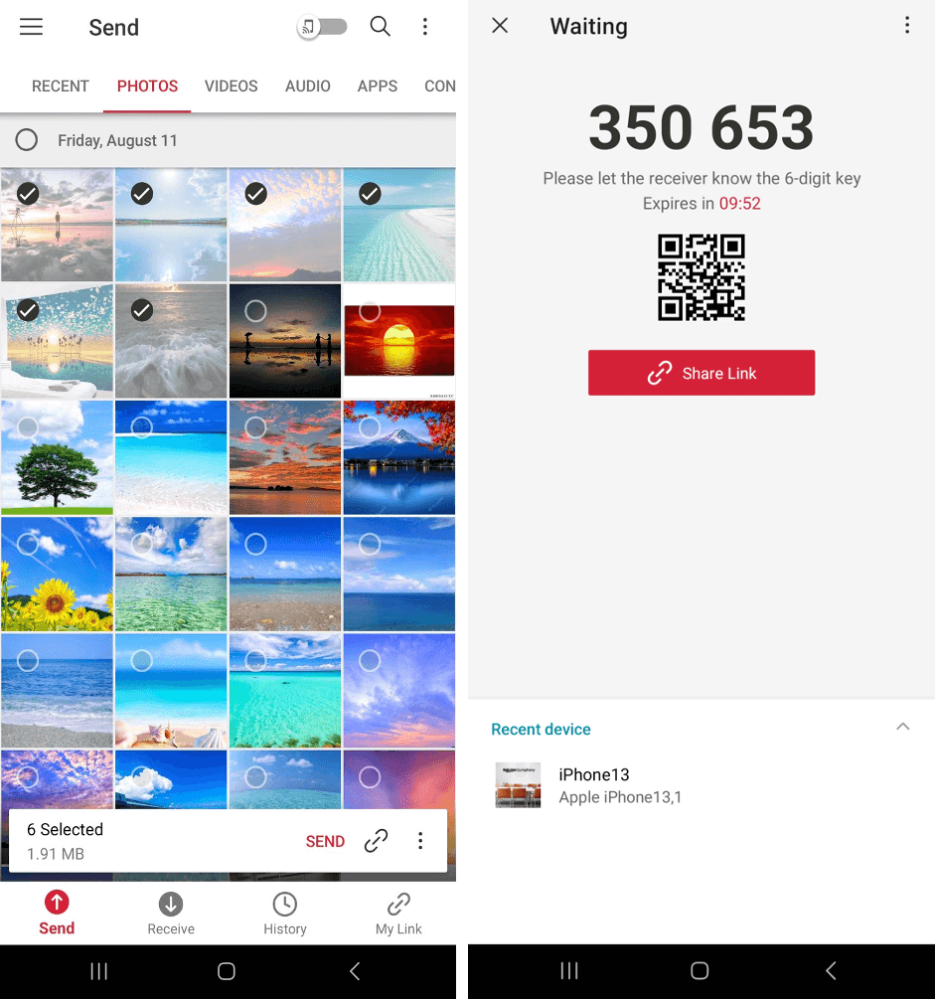
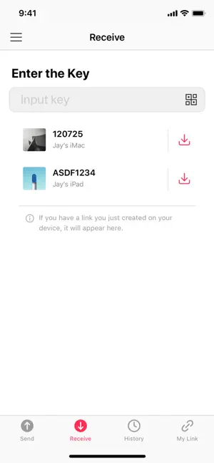

Send Anywhere 快问快答：8 个问题把这个传文件工具聊透
整理了关于 Send Anywhere 的 8 个高频问题，覆盖定位、接收端门槛、三种传输通道、账号注册、iOS 后台中断、链接时效与同类对比，看完就知道该不该装。
整理一篇关于 Send Anywhere 的快问快答——这个工具经常被拿来和微信文件传输助手、AirDrop 比，但真正用过的人会发现它瞄准的是「设备对设备、陌生人之间、不装 App 也能收」那片没人好好做的空白。下面八个问题，照着你脑子里的疑惑来。
Send Anywhere 到底是什么？
一句话：它是一款跨平台的文件传输工具，核心理念是「不注册也能传、对方不装也能收」。和网盘的区别是它不当中转站存文件，文件走的是设备之间的直连通道，传完即焚；和 AirDrop 的区别是 AirDrop 只有苹果全家桶之间好用，Send Anywhere 覆盖 Windows、macOS、iOS、Android、Linux，甚至有网页端。
它的玩法分三路：实时密钥传、链接分享、设备列表直推。前两路不需要账号，第三路靠登录同一台账号让设备互相认识。整体设计上，Send Anywhere 把「临时、轻量、一次性」这个定位卡得很准——你不会想用它当长期存储，但关键时刻需要发一个大文件、或者给一个没装过任何工具的朋友传东西，它就立住了。它的官网上也明确把「无需注册即可使用」写在最显眼的位置。

不用装 App 的人能收文件吗？
能，而且这是 Send Anywhere 最核心的差异化体验。对方不需要注册账号，甚至不需要安装任何软件——你发一个链接过去，对方在手机或电脑浏览器里直接打开就能下载，整个过程在 48 小时内不限次数。
只有一个小坑需要注意：手机浏览器下载某些系统不认识的特殊格式（冷门音频编码、少见的视频容器）可能会落盘失败，这种情况让对方装一个 App 重新下就好，官方帮助中心也是这么建议的。除此之外，链接接收这条路径对零安装用户完全友好，这也是它比微信文件传输助手强的地方——微信传文件终究还是要求双方都在微信上。

六位密钥、链接分享、扫码接收，三种方式怎么选？
三种通道，适用场景完全不同。六位密钥是实时直传用的——你在发送方点「生成密钥」，屏幕上跳出一串六位数字，对方在接收端输入就能配对，文件在两台设备之间点对点传输，传完密钥就失效，适合两个人同时在线的临时传递。
链接分享是异步的——生成一个短链发给对方，对方什么时候有空什么时候下，48 小时内都有效。好处是你发完就可以关 App，不需要保持在线；坏处是链接有流量配额，极端大文件被反复下载可能触发平台限流。
扫码接收最省事——发送方屏幕上显示一个二维码，接收方打开 Send Anywhere 的接收页扫一下就配对，适合两台设备都在你手边、自己给自己传东西的场景（比如从手机导照片到电脑）。
简单记：人在旁边用密钥或扫码，人不在用链接，自己给自己传用扫码。
要不要注册账号？
先说结论：不登录也能完整地传文件。六位密钥、链接分享、扫码这三大核心通道全不要求账号，装上就能用——安装包从官方下载拿就行，这是 Send Anywhere 区别于网盘的设计底线。
登录之后多出来三样东西：跨设备稳定出现的 My Device 设备列表（不登录每次都得走密钥）、所有链接集中管理的 My Link 面板（可以续期、删除、看下载次数）、以及订阅权益绑定到账号上。真正需要账号的三个场景：你有两台以上自己的设备需要互传、你经常发链接需要管理它们、你打算买订阅。
账号也不是没风险——多台设备绑在一起了，设备丢了记得在账号里解绑；共享账号给家人朋友会让 My Link 和设备列表互相可见，介意的话各用各的。
iPhone 传一半就停，这锅谁背？
iOS 的后台机制，不是 Send Anywhere 的 bug。苹果出于安全策略，不允许第三方 App 像桌面程序那样无限期后台跑满带宽——App 一切到后台或锁屏，传输就会被系统暂停。Android 端基本没这毛病（除了小米、华为等定制系统的厂商级省电杀后台，那是另一个问题）。
官方建议的做法很直接：传输过程中别切走、别锁屏，停在 Send Anywhere 界面等它传完。实操上可以补两个习惯：大文件分几批传、传输时插电源防止自动锁屏触发。真中断了也别怕，History 记录页里能找回继续，不会丢文件本体。
链接发出去对方没收到，常见原因有哪些？
先说最容易忽略的：48 小时有效期。Send Anywhere 的链接不是永久的，过了窗口自动删除——Send Anywhere文档里对时效和流量配额都有完整说明，别「先攒着以后再下」，这是不少人踩过的坑。其次是网络环境——VPN、防火墙、代理都可能干扰传输通道，尤其是在公司网络或校园网里，点对点连接经常被拦。
还有两个小概率但会让人困惑的情况：手机浏览器下载特殊格式落盘失败（前面提过），以及订阅用户开了下载次数限制但自己忘了设过。免费档没有下载通知，发完只能自己问对方；订阅用户可以开邮件提醒，有人下载就收到通知。
和微信/QQ 传文件比，Send Anywhere 赢在哪？
微信文件传输助手的上限是 2GB，而且压缩图片、视频掉画质——这是最直观的痛点。Send Anywhere 对文件大小的限制取决于你是免费档还是订阅档，但它不压缩、不掉画质、支持任意格式，传 RAW 照片、工程文件、压缩包都没问题。
QQ 的文件传输稍微宽松一点，但终究还是要求双方都在 QQ 上。Send Anywhere 最硬的那根骨头是「对方不装也能收」——发个链接过去，浏览器直接开，零安装零注册。而且它跨平台的覆盖范围比任何聊天工具都广，Windows 给 macOS 传、手机给 Linux 传，都不用考虑「对方有没有装同一个 App」。
当然聊天工具也有它们的优势——聊天场景下随手发个文档，还是微信最顺手。Send Anywhere 赢在「需要传像样的东西」的时候。
最后一句
如果你经常需要传大文件、或者给没装过任何传输工具的朋友发东西，Send Anywhere 值得装；如果只是偶尔在微信里随手发个文档，那微信文件传输助手够用——两者不冲突，但后者解决不了前者的问题。关于这款软件的资料整理，同步维护在GitHub、Gitee 和 GitCode 上，国内访问选 Gitee 或 GitCode 更顺手。